1. CRC(Cyclic Redundancy Check) (원본 p.4-6)
CRC(Cyclic Redundancy Check)는 다항식 나눗셈(XOR 연산 기반)을 이용해 송신 측이 데이터에 잉여 비트를 붙여 전송하고 수신 측이 동일한 제수로 나누어 나머지가 0인지 확인함으로써 오류 유무를 검사하는 기법이다. 집단 오류(Burst Error) 검출에 가장 우수한 방식으로 꼽힌다.
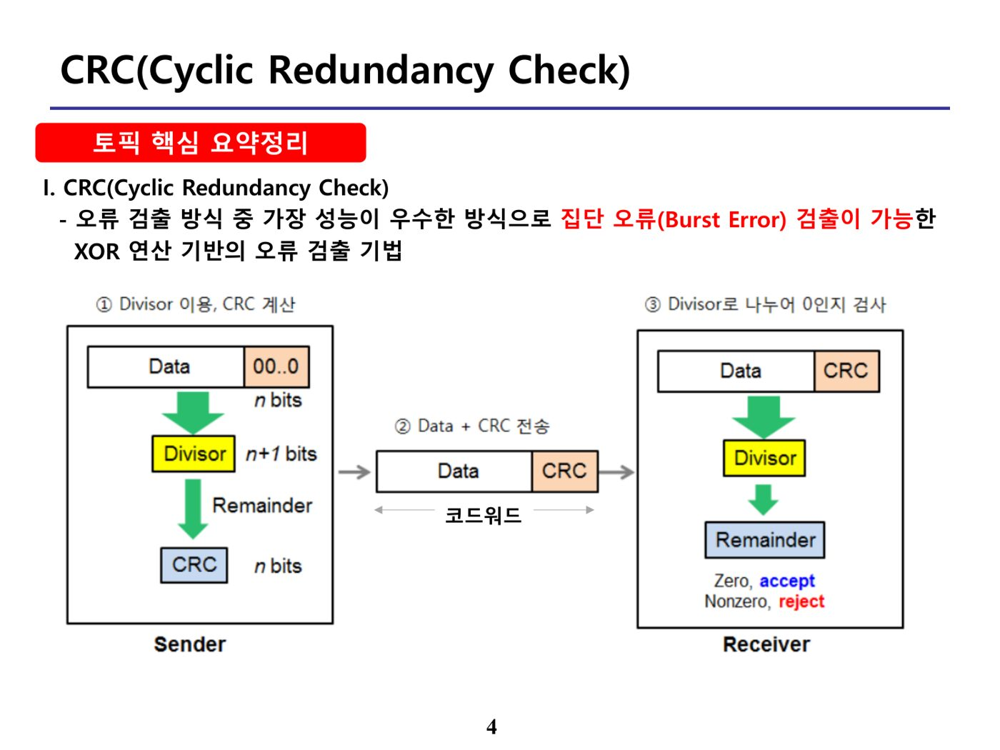
CRC 코드워드는 데이터 워드에 제수(divisor)의 비트수보다 1 작은 만큼의 0을 채운 뒤, 제수로 XOR 연산(모듈로-2 나눗셈)을 반복해 나머지(remainder)를 구하고, 이 나머지를 원래 데이터 워드 뒤에 붙여서 만든다. 예를 들어 데이터 워드가 "111111"이고 제수(divisor)가 "1010"이면, XOR 연산으로 몫(quotient) "110011"과 나머지(remainder) "110"을 구해 코드워드는 "111111 110"이 된다.
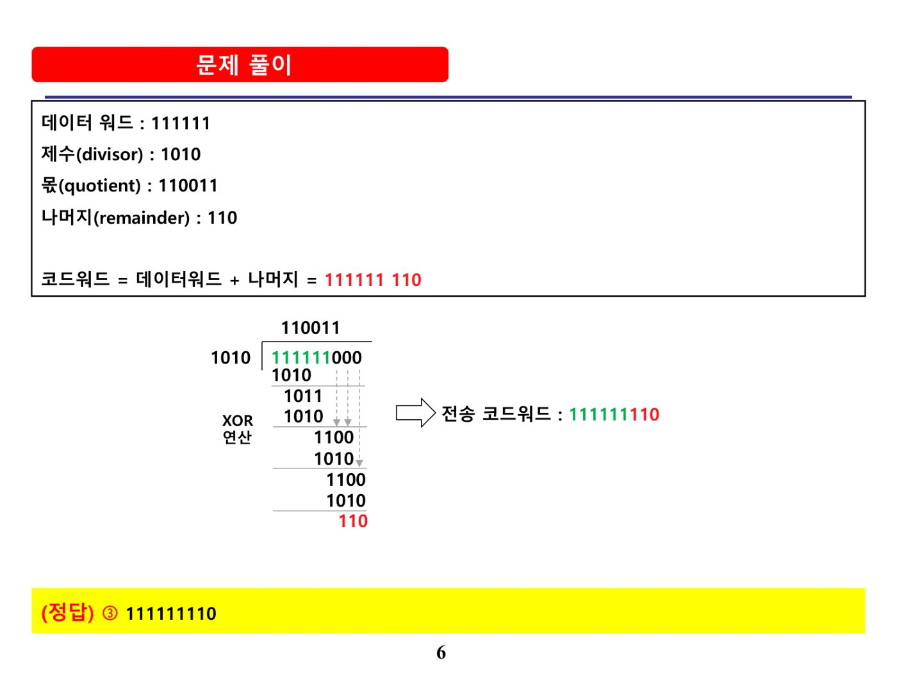
2. 해밍코드(Hamming Code) (원본 p.7-10)
해밍코드는 1비트 오류를 정정할 수 있는 오류 정정 부호로, 2비트 오류가 발생하면 검출은 가능하나 정정은 어렵다는 한계가 있다. 데이터 비트 사이사이에 패리티 비트(Parity Bit)를 삽입하는데, 패리티 비트의 위치는 2p ≥ m+p+1 (m: 데이터 비트 수, p: 패리티 비트 수) 관계식을 만족하도록 정해지며 실제 위치는 20, 21, 22, …번째 자리(1, 2, 4, 8…)에 배치된다.
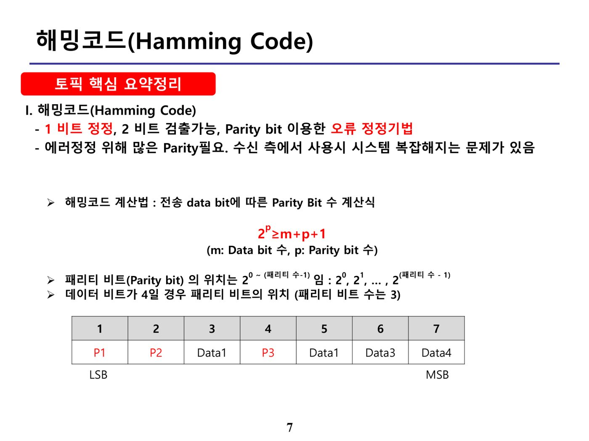
패리티 비트가 담당하는 검사 비트 그룹은 각자의 위치값을 2진수로 표현했을 때 해당 자릿수가 1인 데이터 비트들로 정해진다. 예를 들어 4비트 데이터에 3개의 패리티 비트(P1, P2, P3)가 붙는 7비트 코드워드에서, P1은 1·3·5·7번째 비트, P2는 2·3·6·7번째 비트, P3는 4·5·6·7번째 비트에 대해 짝수 패리티를 검사한다.
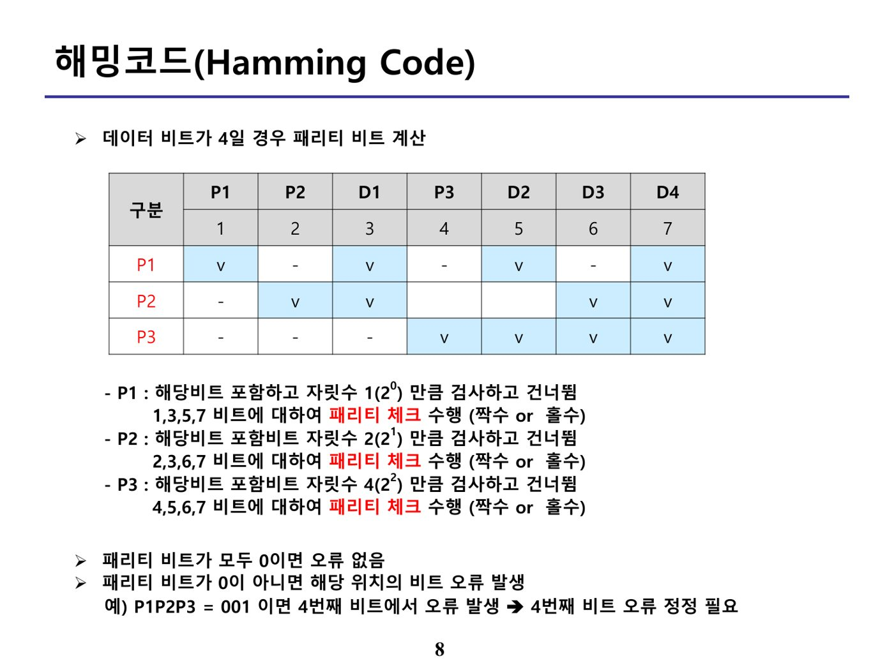
수신 측은 P1P2P3 형태로 검사 결과를 조합해 오류 비트의 위치를 바로 찾아낸다. 예를 들어 P1P2P3 = 010이면 2번째 비트에서 오류가 발생했다는 뜻이며, 000이면 오류가 없다는 뜻이다.
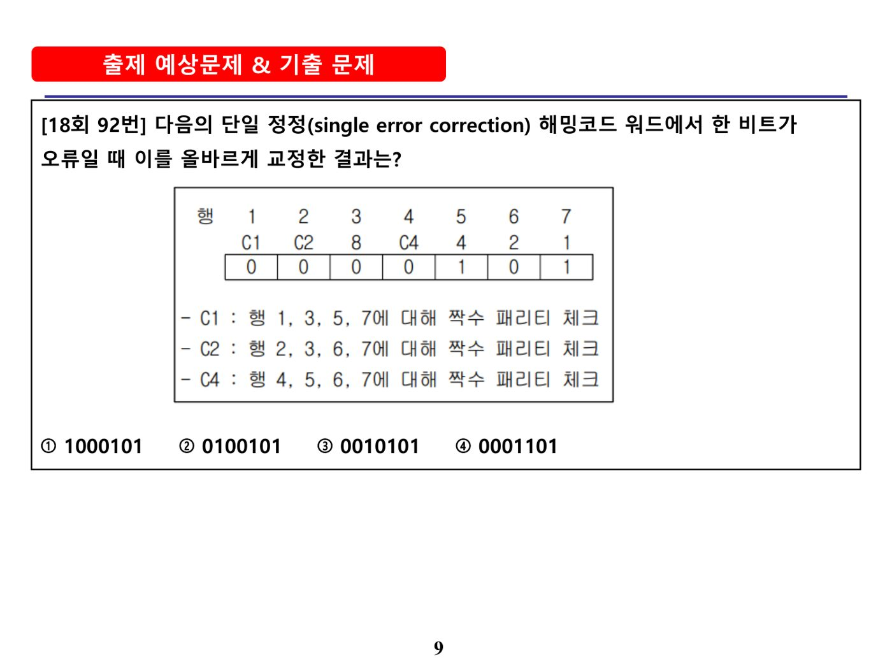
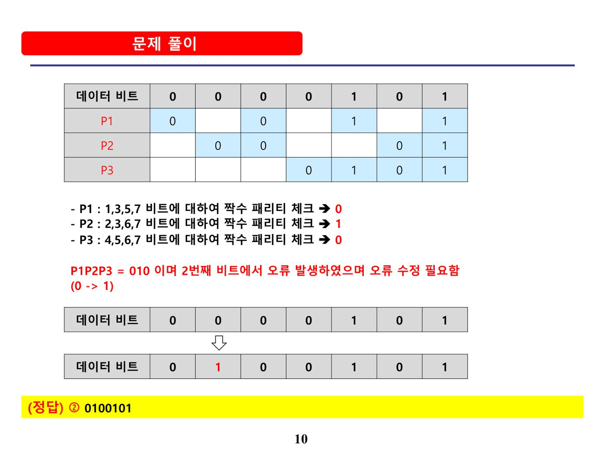
3. ARQ(Automatic Repeat request) (원본 p.11-16)
ARQ는 데이터 수신 측이 오류 검출 후 오류 사실을 송신 측에 알리고 재전송을 요청하여 오류를 수정하는 네트워크 오류제어 기법으로, Stop-and-Wait ARQ·Go-back-N ARQ·Selective-Repeat ARQ·Hybrid ARQ·Adaptive ARQ 등이 있다.
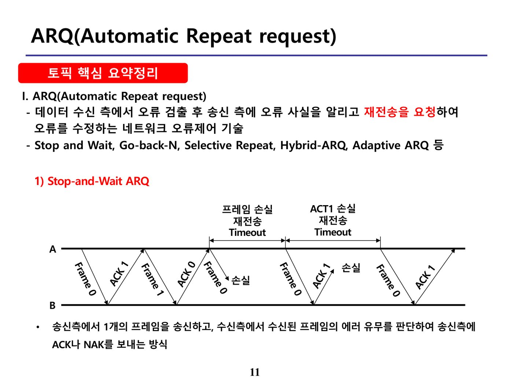
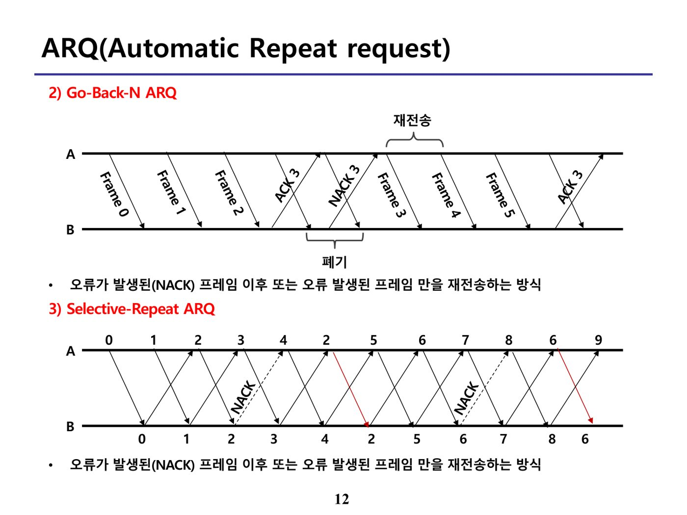
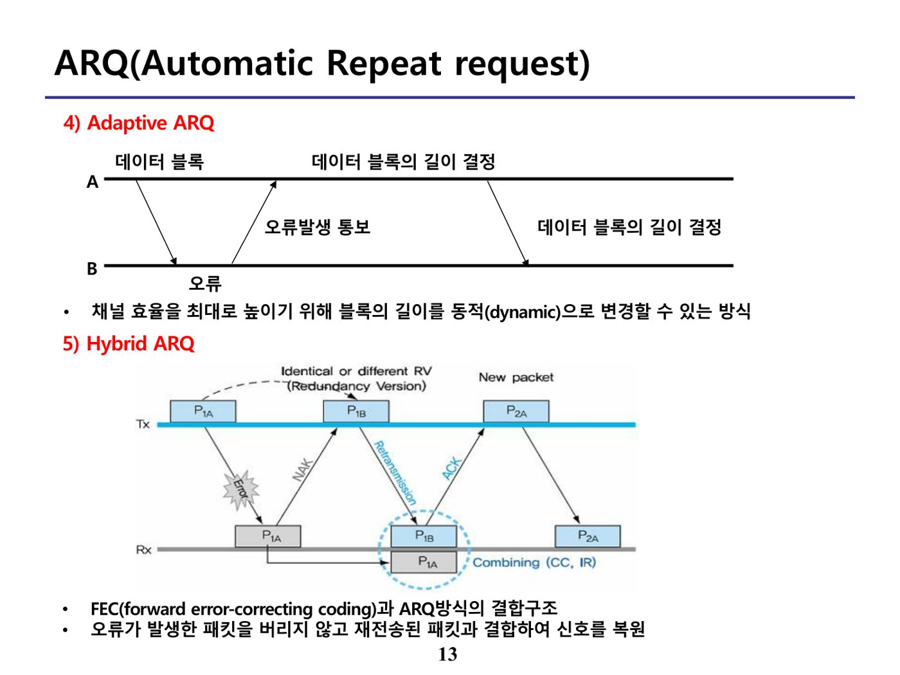
| 구분 | Go-Back-N(GBN) | Selective Repeat(SR) |
|---|---|---|
| 개념 | 프레임 손실(Timeout, NAK 등)이 확인된 이후의 프레임을 모두 재전송 | 프레임 손실이 확인된 프레임만 재전송 |
| 송신 윈도우 최대 크기 | 2m − 1 (m: 순서번호 필드 비트 수) | 2(m−1) |
| 수신 윈도우 최대 크기 | 1 | 2(m−1) |
| 구분 | 설명 |
|---|---|
| Chase Combining(CC) | 송신기는 재전송 시 처음 보냈던 패킷 신호와 동일한 패킷 신호를 전송하며, 수신기는 이전 패킷 신호와 재전송으로 수신된 패킷 신호를 결합(combining)하여 오류를 복구한다. |
| Incremental Redundancy(IR) | 매 재전송 패킷마다 에러 복구에 필요한 Redundancy bit를 증가시키고 Information bit를 감소시켜, 채널 수신단에서 에러를 정정하도록 하는 방식이다. |
4. IPv6 (원본 p.17-23)
가. IPv6 개념과 주소체계
IPv6는 IPv4 주소 고갈 문제의 임시 해결책이었던 CIDR·사설 IP 주소·NAT의 도입에도 불구하고 남아 있는 기존 IP 주소 체계의 단점들을 수정·보완·대체하기 위해 만들어진 새로운 주소 체계다. 사용 가능한 주소 공간의 증대, 주소의 계층화를 통한 할당·관리 용이성, 자동적인 주소 부여 기능(Stateless Auto Configuration), 헤더의 단순화와 확장성, 종단 장비 간 통신으로의 복귀와 보안성 강화, 모바일 IPv6 기술 등이 장점으로 꼽힌다. 주소는 총 128비트를 16비트씩 8자리로 나누어 콜론(:)으로 구분해 표기하며(예: 2001:0DB8:1000:0000:0000:0000:1111:2222), 각 필드 맨 앞의 연속되는 0은 생략할 수 있고 연속되는 0 필드는 "::"로 한 번만 축약해 표현할 수 있다(예: 2001:DB8:1000::1111:2222).
나. IPv6 헤더 구조
IPv6 패킷은 기본 헤더, 확장 헤더, 상위계층 데이터의 3부분으로 구성된다. 기본 헤더는 다음 필드로 이루어진다.
| 필드 | 설명 |
|---|---|
| Version(4비트) | IPv4이면 4, IPv6이면 6 |
| Traffic Class(8비트) | IPv6 패킷의 클래스나 우선순위를 나타내며 IPv4의 TOS(Type of Service) 필드와 유사한 기능 |
| Flow Label(20비트) | 패킷들의 특정한 흐름 특성을 나타내는 필드로, 음성·화상 등 실시간 데이터 트래픽은 0이 아닌 값으로 설정 |
| Payload Length(16비트) | 페이로드부의 길이(확장헤더 + 상위계층 데이터) |
| Next Header(8비트) | 기본헤더 다음에 위치하는 확장 헤더의 종류를 표시 |
| Hop Limit(8비트) | IPv4의 TTL(Time To Live)에 대응 |
| Source/Destination Address(각 128비트) | 발신지와 목적지 주소 |
확장 헤더는 홉-바이-홉(Hop-by-Hop, 데이터그램이 거쳐 가는 모든 라우터에 소스 정보 전달), 목적지(Destination, 정보를 목적지에만 전달), 소스 라우팅(Source Routing), 단편화(Fragmentation, IPv6는 원 근원지에서만 단편화 가능), AH(발신자 인증·무결성), ESP(기밀성 보장), 이동성(MIPv6) 등으로 구분된다.
다. IPv6 통신방식과 전환기술
| 통신방식 | 설명 |
|---|---|
| Unicast | 글로벌 주소(IPv4의 공인주소와 유사, 2001::/16 등 001로 시작)와 링크 로컬 주소(FE80::/10 고정 대역 + interface EUI-64 ID 결합, 직접 연결된 동일 링크·서브넷에서 사용)로 구분 |
| Multicast | Solicited Node Multicast(이더넷 환경 Neighbor 탐색, IPv4 ARP와 유사, FF02::1:FF로 고정), All Node Multicast(FF02::1), All Router Multicast(FF02::2) |
| Anycast | 유니캐스트(1:1)와 멀티캐스트(1:N)와 달리 '1:가장 가까운 1'간의 통신방식 — 동일 주소를 가지는 여러 목적지 장비 중 출발지와 가장 가까운 장비가 응답 |
| 전환기술 | 설명 |
|---|---|
| 듀얼스택(Dual-stack) | 구현이 가장 용이하며, 하나의 물리 장비에서 IPv4·IPv6 패킷을 동시 처리 |
| 터널링(Tunneling) | 동종 네트워크 간 통신을 위해 이기종 네트워크를 경유할 때 사용. 설정 터널링과 자동 터널링(6to4, DSTM 등)으로 구분 |
| 주소변환(Address Translation) | IPv4·IPv6 패킷을 상호 변환. 변환되는 계층에 따라 SIIT(헤더변환), TRT(전송계층 릴레이), ALG(응용계층 게이트웨이)로 분류 |
5. ICMPv6 (원본 p.24-27)
| ICMPv6 추가기능 | 설명 |
|---|---|
| PMTUD(Path MTU Discovery) | 목적지로 가는 경로상의 링크들 중 MTU 값이 가장 적은 링크의 MTU 값을 확인하는 과정 |
| MLD(Multicast Listener Discovery) | IPv4의 IGMP와 유사한 기능. MLQ·MLR·MLD 3개의 메시지 타입을 사용 |
| NDP(Neighbor Discovery Protocol) | IPv4의 ARP와 유사한 역할. NS(Neighbor Solicitation)와 NA(Neighbor Advertisement)를 사용 |
ICMPv6 메시지는 Type 값 0~127번은 에러 메시지(Destination Unreachable, Packet Too Big[Type 2], Time Exceed, Parameter Problem), 128~255번은 정보 메시지(Echo Request/Reply, MLQ/MLR/MLD, RS/RA, NS/NA, Redirect)로 구분된다.
- 에러 메시지가 0~127번, 정보 메시지가 128~255번이다(반대로 서술하면 오답).
- Packet Too Big 메시지는 Type 2이다(Type 4가 아님).
- NDP(Neighbor Discovery Protocol)는 IPv4의 ARP와 유사한 역할이다(RARP가 아님).
6. Subnetting/Supernetting/NAT (원본 p.28-34)
가. 서브넷팅(Subnetting)
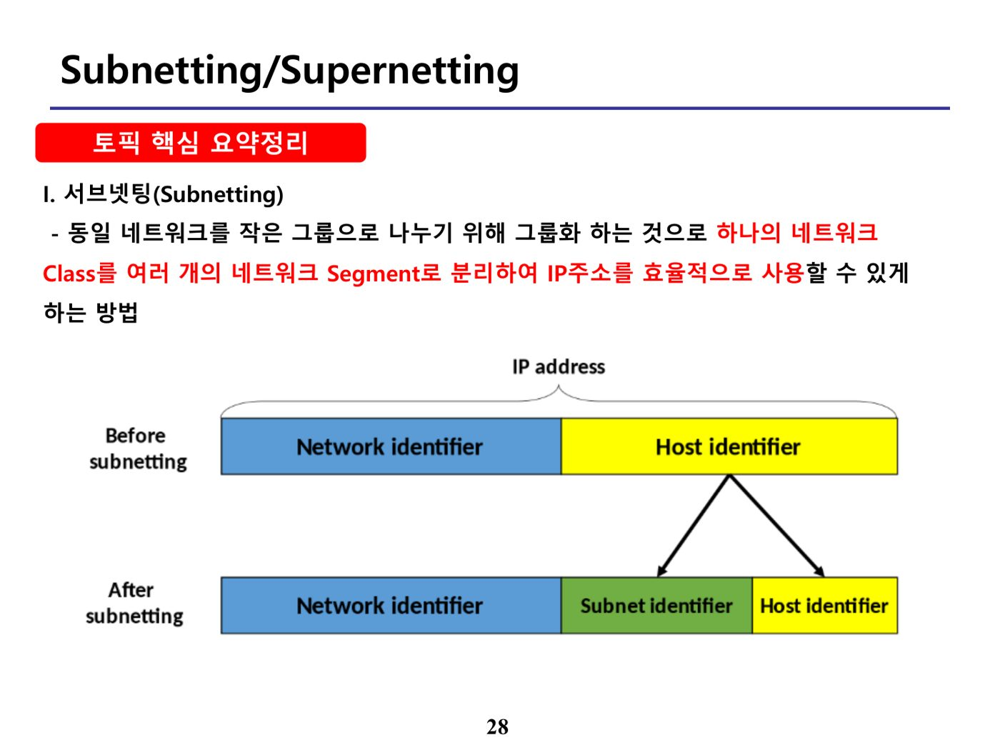
| 절차 | 설명 |
|---|---|
| 필요 네트워크 조사 | 네트워크 구성에 필요한 네트워크 수 파악 |
| 서브넷을 위한 Bit 수 결정 | Host ID를 이용해 서브넷 네트워크를 만들기 위한 Bit 수 결정 |
| 네트워크 ID 값 결정 | 각 네트워크를 대표하는 네트워크 ID 결정 |
| Subnet Mask 계산 | 네트워크 ID를 구분할 수 있도록 Subnet Mask 계산 |
| 유효 Host 수 계산 | Network ID와 Broadcast address는 제외 |
| Broadcast address 결정 | 네트워크 전체와 통신을 위한 Broadcast address 도출 |
나. 슈퍼네팅(Supernetting)과 CIDR
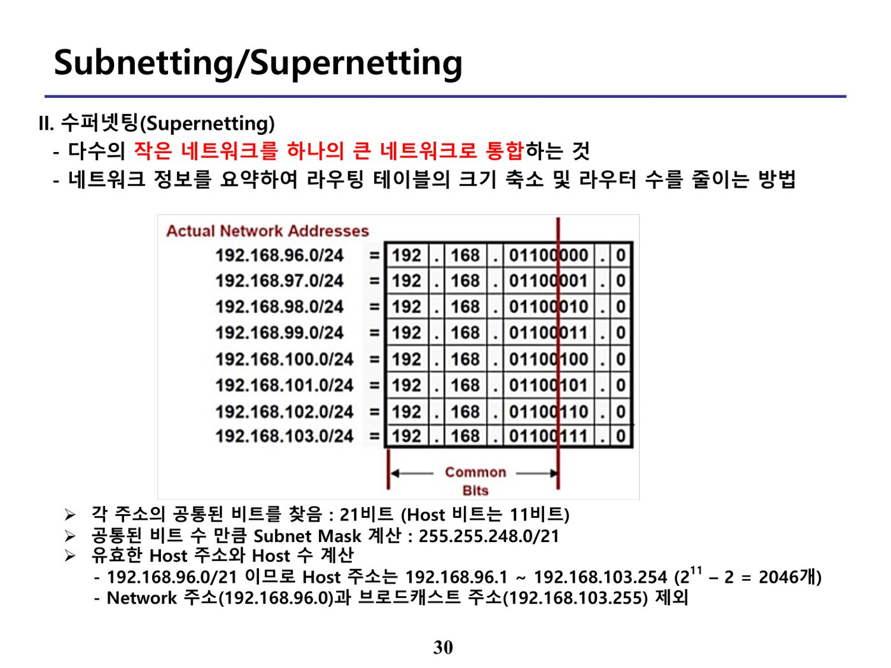
슈퍼네팅은 다수의 작은 네트워크를 하나의 큰 네트워크로 통합하는 것으로, 네트워크 정보를 요약해 라우터 테이블의 크기를 축소하고 라우터 수를 줄이는 방법이다. CIDR(Classless Inter-Domain Routing)은 IP 주소를 Classful과 같은 규격화된 구분 없이, 비트 단위의 Subnet Mask 정보도 네트워크 정보로 함께 라우팅하는 방식으로, IPv4 주소의 효율적 사용과 접두어를 이용한 계층적 주소 지정으로 광역 라우팅 부담을 줄인다.
예를 들어 IPv4 주소 168.199.160.82/27은 서브넷 마스크가 255.255.255.224이며, 호스트 식별자의 크기는 5비트이므로 서브넷은 8(23)개이고 각 서브넷의 호스트 수는 32(25)개다. 각 서브넷의 호스트 주소 범위는 168.199.160.0~31, 32~63, 64~95, 96~127, 128~159, 160~191, 192~223, 224~255로 나뉘며, 82가 속한 서브넷(64~95)의 마지막 IP 주소는 168.199.160.95다.
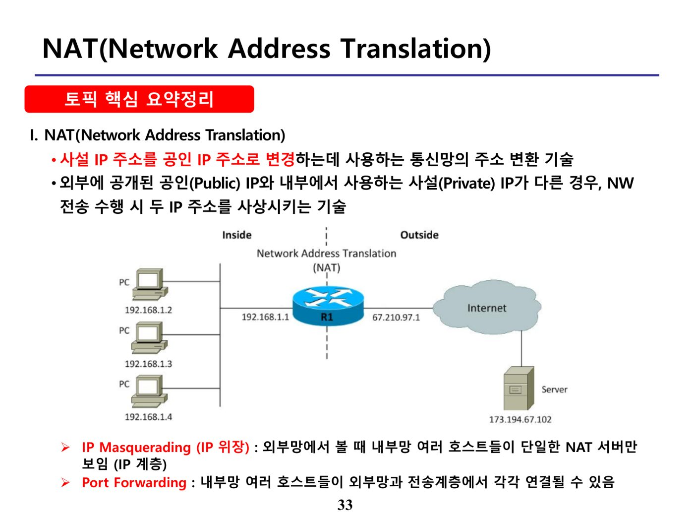
다. NAT(Network Address Translation) 유형
| 유형 | 설명 |
|---|---|
| Static NAT | IP 매핑 방식(1:1 방식 주소 변환) — 내부 IP 주소 1개에 외부 IP 주소 1개 할당. 외부에서 접근할 때 효과적 |
| Dynamic NAT | IP 매핑 방식(외부 IP:내부 IP ⇒ M:N 방식) — NAT Pool에 있는 내부 IP 주소가 외부 IP 주소에 할당. 외부 IP보다 내부 실제 Host 수가 적을 때 효과적 |
| PAT(Port Address Translation) | IP 매핑 방식(외부 IP:내부 IP ⇒ H:N 방식) — 내부 IP 주소가 Port를 변경해 가며 같은 외부 IP 주소로 변환. 1개 이상의 외부 IP를 여러 내부 IP가 공유할 때 사용 |
| LSNAT(Load Sharing NAT) | IP 매핑 방식(외부 IP:내부 IP ⇒ 1:N 방식) — 1개의 외부 IP를 여러 내부 IP에 매핑(Distributed NAT). 외부망에서 해당 IP를 목적지로 하는 모든 세션을 각 내부 IP로 분산 변환 |
7. TCP/MPTCP/SCTP (원본 p.35-42)
가. TCP(Transmission Control Protocol)
TCP는 신뢰성 있는 통신을 지향하는 전송계층 프로토콜이다. 연결 설정은 3-way 핸드쉐이킹(Sync, Ack)을 사용해 양쪽이 데이터 전송 준비가 되었음을 보장하며, 연결 해제는 4-way 핸드쉐이킹(FIN, Ack)을 사용한다.
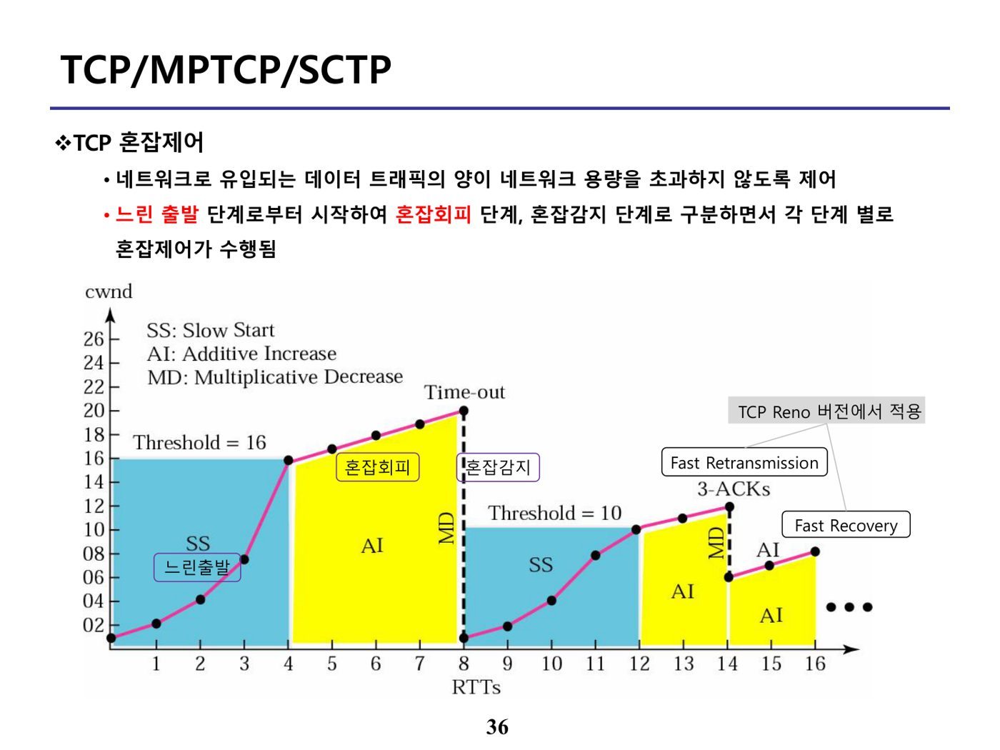
| 혼잡제어 단계 | 설명 |
|---|---|
| 느린 출발(Slow Start) | 혼잡 윈도우(cwnd) 크기를 한계치(threshold)에 도달할 때까지 1→2→4→8…로 지수적으로 증가 |
| 혼잡회피(Congestion Avoidance) | 혼잡 상태가 감지될 때까지 혼잡 윈도우를 1씩(1,2,3,4…) 선형 증가 |
| Multiplicative Decrease | 재전송 타이머 만료(Time-out) 시 threshold ≤ ½×(윈도우크기), cwnd ≤ 1로 복귀. 3개의 중복 ACK 수신 시 threshold ≤ ½×(윈도우크기), cwnd ≤ threshold로 조정 |
| 빠른 재전송(Fast Retransmission) | 연속된 3개의 중복 ACK 수신 시 네트워크 혼잡에 의한 손실로 간주하고 빠르게 재전송 |
| 빠른 회복(Fast Recovery) | 손실 발생 시 혼잡 윈도우를 손실 당시 크기의 절반으로 줄인 뒤 혼잡회피 과정으로 전송을 재개 |
| 타이머 | 내용 |
|---|---|
| 재전송(Retransmission) 타이머 | 세그먼트 전송마다 가동. 정해진 시간(RTO) 내 ACK가 없으면 재전송(RTO는 고정값이 아님) |
| 영속(Persistence) 타이머 | 윈도우 크기 결정을 위한 타이머. Window Probe 패킷의 송신 주기를 처리 |
| 시간 대기(Time-waited) 타이머 | 연결 종료 후 이 시간 동안만 연결을 유지 — 지연·중복 도착 패킷을 폐기해 방지 |
| 연결 유지(Keep-alive) 타이머 | 연결이 오랫동안 휴지 상태에 있지 않도록 함. 일반적으로 2시간 무응답 시 75초 간격으로 프로브 패킷을 10번 송신 후에도 응답이 없으면 연결 종료 |
나. MPTCP(Multipath TCP)
MPTCP는 단말과 TCP 서버 간에 다수의 TCP 경로를 구성하고 다수의 경로로 동시에 데이터를 송수신하는 TCP 확장형 프로토콜이다. 전송계층을 MPTCP 계층(하나의 논리적 연결로 보이도록 연결 관리)과 서브플로우 계층(논리적 연결을 경로 수만큼 나눠 각각 독립된 단일 경로 TCP처럼 취급)으로 분류한다. 초기 연결 과정은 3-way 핸드쉐이킹에 MP_CAPABLE 옵션을 포함하고, 서브플로우 추가 과정은 4단계로 이루어지며 MP_JOIN 옵션을 포함한다. 연결 해제는 TCP와 달리 각 서브플로우에서 독립적으로 FIN 패킷을 전송해야 해당 서브플로우만 종료된다(MPTCP 계층에서 한 번에 모든 연결을 해제하는 것이 아님).
다. SCTP(Stream Control Transmission Protocol)
SCTP는 UDP의 메시지 지향(message-oriented) 특성과 TCP의 연결형 신뢰성 제공 특성을 조합한 프로토콜로, 멀티스트리밍(multi-streaming) 및 멀티호밍(multi-homing)을 제공한다. 연결 설정은 4-way 핸드쉐이킹을 사용해 양 종단 간 primary IP와 대체 가능 IP 주소 목록을 교환하며, DATA Chunk에는 순서 유지가 필요 없는 경우 지연을 줄이는 U(Unordered) 플래그가 존재한다. 연결 해제는 TCP와 달리 3단계로 구성된다.
8. 성능(TPS·실행시간·벤치마킹) (원본 p.43-51)
가. 성능 테스트 용어(TPS, Transaction Per Second)
| 용어 | 설명 |
|---|---|
| Response Time | 사용자가 서버에 요청한 시간부터 응답을 받을 때까지의 모든 시간 |
| Think Time | 응답을 받은 후 웹 페이지를 보는 등 작업하는 시간 |
| Request Interval | Think Time까지 포함하여 다음 요청이 발생하기까지의 전체 시간 |
| Concurrent User | 시스템을 현재 사용하고 있는 사용자 |
| Active User | 현재 시스템에 트랜잭션을 실행해 부하를 주고 있는 사용자 |
| TPS | 초당 처리할 수 있는 트랜잭션의 양 |
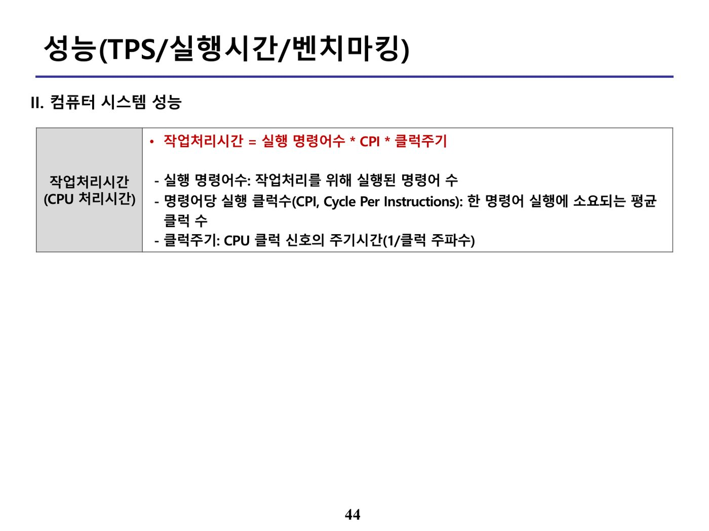
TPS 관련 핵심 공식은 다음과 같다: TPS = Active User / Average Response Time = Concurrent User / Request Interval. 이를 응용하면 Active User = Concurrent User × Average Response Time / (Average Response Time + Average Think Time)로 구할 수 있다. 예를 들어 10,000명이 동시 로그인해 시간당 180만 개의 비즈니스 기능을 처리한다면 TPS = 1,800,000/3,600 = 500 TPS이고, 평균응답시간 = Active User/TPS = 10,000/500 = 20초가 된다.
나. 벤치마크 표준
| 구분 | 측정기준 | 특징 |
|---|---|---|
| TPC | TPC-C(tpmC) | 다양한 크기·복잡도의 상호연관된 DB 테이블에 대해 5개의 트랜잭션 유형을 규정, 분당 트랜잭션으로 성능 측정. OLTP 시스템의 사용자 사고 시간을 고려 |
| TPC-E(tpsE) | 더 복잡한 데이터베이스와 전체 실행 구조로 TPC-C보다 복잡. 12가지 동시 트랜잭션 유형을 혼합 | |
| SPEC | SPECjEnterprise | Java EE 5 이상 애플리케이션 서버·DB·인프라의 전체 시스템 성능 측정 |
| SPECjbb | 최신 Java 응용 프로그램 기능에 따른 성능 측정 | |
| SPEC JMS | JMS 기반 엔터프라이즈 메시지 지향 미들웨어 서버 성능 평가 | |
| SPECjvm | JRE 성능 측정을 위한 벤치마크 제품군, 실제 Java 기능 중심 |
다. 컴퓨터 성능 계산 예제
2GHz 클럭 컴퓨터 A에서 실행시간이 10초인 프로그램을, 컴퓨터 A보다 1.2배 많은 클럭 사이클이 필요한 컴퓨터 B에서 8초에 실행시키려 할 때, 클럭주기 = 1/2GHz이므로 명령어 × CPI(A) = 20이고, 컴퓨터 B의 클럭속도 = (명령어 × 1.2×CPI(A)) / 8초 = 24/8 = 3GHz가 된다.
또 다른 예로, 실행시간 100초(CPU 시간 80초 + I/O 시간 20초)인 벤치마크 프로그램에서 CPU 시간이 CPU 개수에 정비례해 감소하고 CPU 개수가 2년마다 2배씩 증가한다면, 6년 후 CPU는 8배 증가해 CPU 시간은 10초로 줄고 I/O 시간 20초는 그대로이므로 실행시간은 30초(CPU 10초+I/O 20초)가 되며, 이때 I/O 시간이 차지하는 비율은 20/30 ≈ 66.6%다.
9. CPU 스케줄링 (원본 p.52-54)
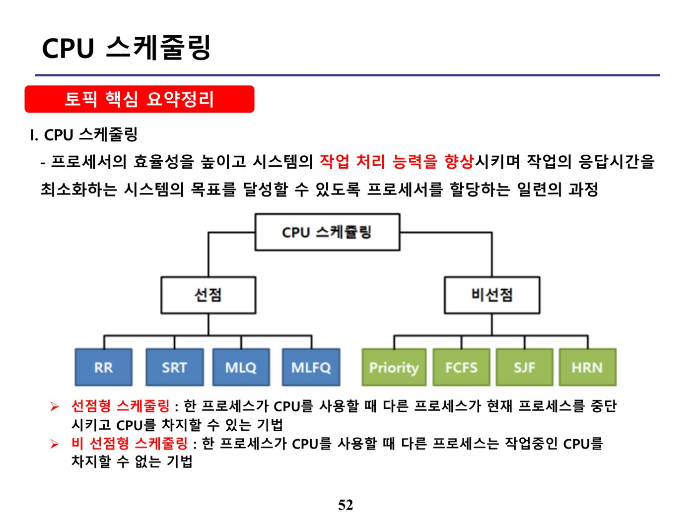
| 알고리즘 | 특징 | 설명 |
|---|---|---|
| RR(Round Robin) | 대화형 시스템에서 주로 사용, 시간 간격(time slice) 크기에 따라 성능 좌우 | 작업은 할당된 시간 내 처리, 미완료 작업은 준비 큐로 보내고 CPU는 다음 프로세스에 할당 |
| SRT(Shortest Remaining Time First) | 시분할 시스템에 유용, SJF보다 오버헤드 증가 | 새로 들어오는 작업 포함, 남은 시간 추정치가 가장 적은 작업에 CPU 할당 |
| MLQ(Multi Level Queue) | 작업 유형별로 분류해 우선순위 결정, 프로세스는 다른 큐로 이동 불가 | 여러 종류의 큐가 존재하고 각 큐는 자신의 스케줄링 알고리즘 수행 |
| MLFQ(Multi Level Feedback Queue) | 낮은 단계 큐일수록 시간 할당량 증가하나 CPU 차지 빈도는 감소 | FIFO 형태로 우선순위 다른 큐가 여러 개 존재, 새 프로세스는 높은 우선순위에서 시작해 시간 내 처리 못 하면 낮은 우선순위 큐로 이동 |
| 우선순위(Priority) | 기아 현상(Starvation) 발생 가능, 실행 중 Interrupt 미발생, 동일 우선순위는 FCFS로 동작 | 각 프로세스에 우선순위를 부여하고 순위가 높은 순서대로 처리 |
| FCFS(First Come First Service) | 반환 시간 예측 불가, 짧은 작업이 긴 작업 뒤에 수행될 수 있음 | 준비 큐에 도착한 순서대로 디스패칭 |
| SJF(Shortest Job First) | 긴 프로세스의 기아 현상 발생 가능, 대화형 시스템에서 사용 곤란 | 수행 시간이 가장 짧다고 예상되는 프로세스를 먼저 수행 |
| HRN(Highest Response Next) | 가변적 우선순위 = (대기시간+서비스시간)/서비스시간 | SJF의 단점을 극복하기 위해 대기 시간을 함께 고려해 우선순위 결정 |
10. 실시간 스케줄링 (원본 p.55)
| 항목 | RM(Rate Monotonic) | EDF(Earliest Deadline First) |
|---|---|---|
| 개념 | 독립적인 개별 프로세스 주기를 기준으로, 주기가 짧을수록 높은 우선순위를 부여하는 정적 방식 스케줄링 | 임의의 실행 시점에서 가장 가까운 마감 시간을 갖는 프로세스에 높은 우선순위를 할당하는 동적 방식 스케줄링 |
| 정책 | 정적 우선순위 | 동적 우선순위 |
| 원리 | 태스크 간 선행 관계가 없는 조건 만족 시, 수행 전 주기가 짧은 태스크에 높은 우선순위 부여 | 스케줄링 순간마다 프로세스를 검사해 마감시간이 가까운 태스크를 우선 스케줄링 |
| 장점 | 마감시간 정보 없이 이용률 한계 제약이 없다면 최적, 연성 실시간 시스템 요구조건 만족, 사용률 0.69 이하면 항상 스케줄링 가능 | 프로세스가 주기적일 필요 없음, 이론적으로 총 이용률 1 이하면 스케줄링 가능 |
| 단점 | 이용률 한계로 마감시간 만족 보장 불가, 주기 긴 태스크는 우선순위가 낮아 장시간 대기 | 실행 가능해질 때 자신의 마감시간을 알려주어야 함, 수행시간·마감시간·주기의 정확한 예측이 어려움 |
11. TLB(Translation Look-aside Buffer) (원본 p.56)
| 구분 | 설명 |
|---|---|
| TLB Hit | 가상주소에 해당하는 페이지 테이블 항목이 TLB에 있음 — CPU가 TLB를 통해 즉시 물리주소 생성 |
| TLB Miss | 가상주소에 해당하는 페이지 테이블 항목이 TLB에 없음 — 주기억장치의 페이지 테이블 참조 후 TLB 갱신 |
| Page Fault | 가상주소에 해당하는 페이지 테이블 항목이 TLB와 주기억장치 모두에 없음 — 디스크로부터 페이지 반입 후 페이지 테이블 갱신 |
12. 스레싱(Thrashing) (원본 p.57)
| 구분 | 워킹셋(Working Set) | PFF(Page-Fault Frequency) |
|---|---|---|
| 개념 | 특정 시간에 실행되는 프로그램에 지역성(Locality)이 포함되는 페이지들의 집합을 이용해 스레싱을 감소 | 페이지 부재율의 상한과 하한을 설정해 프레임 개수를 변경함으로써 스레싱을 감소 |
| 특징 | 오버헤드 발생, 기억장치 참조 후 페이지 집합 수정 | 오버헤드 적음, 페이지 폴트 발생 시 수정 |
스레싱(Thrashing)은 프로세스가 실행에 필요한 최소한의 페이지 프레임을 확보하지 못해, CPU가 실제 작업 처리보다 페이지 교체(스와핑) 작업에 더 많은 시간을 소비하게 되는 현상을 말한다.
13. 파이프라인 해저드 (원본 p.58)
| 유형 | 원인 | 해결방법 |
|---|---|---|
| 구조적 해저드 | 하드웨어가 여러 명령의 수행을 지원하지 않아 자원 부족 등으로 발생하는 충돌 문제 | 하버드 아키텍처, 지연(Stall), HW 자원 추가 |
| 데이터 해저드 | 명령이 파이프라인에서 수행 중인 이전 명령의 결과에 종속되어 발생. RAW(이전 명령 결과를 후속 명령이 읽으려 할 때), WAR(이전 명령이 읽기 전에 후속 명령이 씀), WAW(이전 명령이 쓰기 전에 후속 명령이 씀) | Forwarding/Bypassing, Register Rename, 지연(stall, bubble), 컴파일러에 의한 명령어 재배치 |
| 제어 해저드 | 분기명령에서 분기가 결정되는 시점에 이미 후속 명령들이 파이프라인에 채워져 있어 발생 | 분기예측, 지연, 지연분기 |
14. 상호배제 (원본 p.59)
| 구현 방법 | 기법 | 설명 |
|---|---|---|
| HW 기법 | Test and Set | 상태를 점검(Test)하고 변경(Set)하는 하드웨어 명령어로, 프로세서에 의해 나눠지지 않고 수행됨(원자적) |
| SWAP | CPU 명령어로 두 값을 문맥교환 없이 교체 | |
| interrupt-disable/enable | Timer interrupt를 강제로 가능/불가능하게 해 Context Switching 방지. 특권명령어로 사용자모드에서는 사용 불가 | |
| SW 기법 | Dekker | 두 프로세스가 공유변수를 활용, 상호배제의 최초 소프트웨어 해결법 |
| Peterson | 두 프로세스가 공유변수를 사용, Dekker를 보완해 상대방에게 진입 기회를 양보 | |
| Bakery(Lamport) | 분산처리 환경에 유용한 알고리즘(N개 프로세스). 번호를 부여받아 낮은 번호가 먼저 수행. 상호배제·한계대기·진행 조건을 모두 만족 |
15. FTL(Flash Translation Layer) (원본 p.60-64)
FTL(Flash Translation Layer)은 디스크를 섹터 기반으로 인식하는 운영체제와 프로그램들이 페이지와 블록으로 구성된 SSD를 인식할 수 있도록 매핑해주는 기술로, 플래시 메모리가 파일시스템 사이에 위치하면서 플래시 메모리를 디스크처럼 사용할 수 있게 해준다.
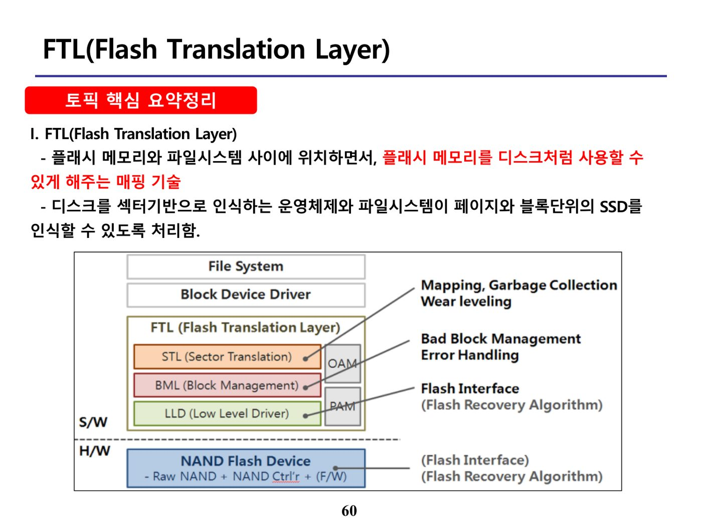
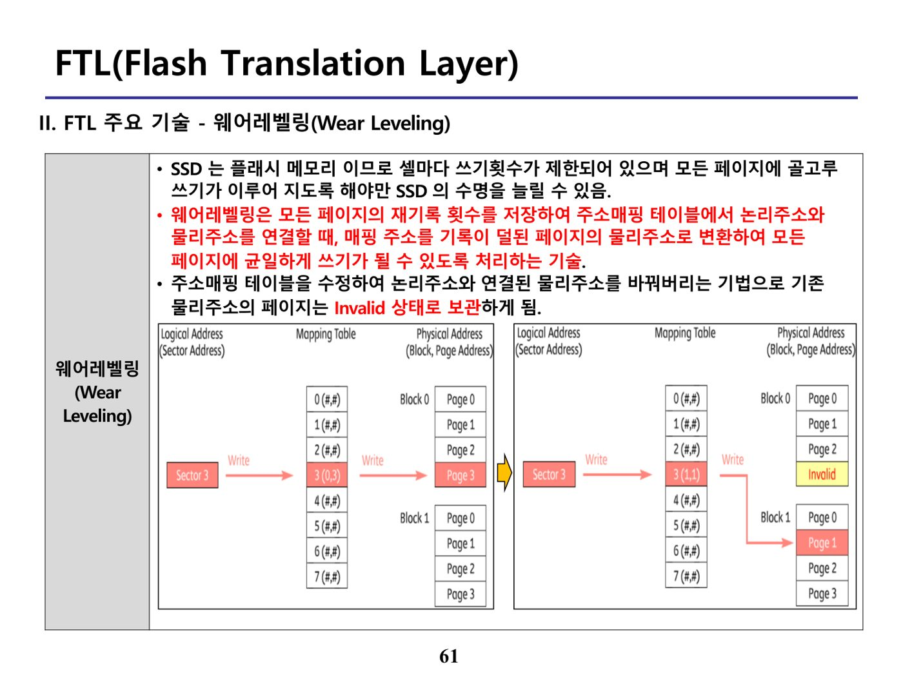
| 용어 | 설명 |
|---|---|
| Garbage Collection | 메모리 사용 중 Invalid 페이지(가비지 페이지)가 어느 정도 쌓이면 적절한 시점에 한꺼번에 삭제하는 기술 |
| Over Provisioning | Wear Leveling·GC 작업을 위한 여유 공간 |
16. 분산원장(Distributed Ledger Technology) (원본 p.65)
| 구분 | Bitcoin | Ethereum | Hyperledger Fabric | R3 Corda |
|---|---|---|---|---|
| 가상화폐 | O | O | X | X |
| 적용영역 | 가상화폐 | 가상화폐/범용 | 범용 | 계약 기록/자동차 |
| 네트워크 참여 | Anyone | Anyone | Permissioned NW | Permissioned NW |
| 거래공유 | 전체 참여자에게 전체 공유 | 전체 참여자에게 전체 공유 | 전체 참여자에게 전체 공유(멀티채널) | 거래 당사자에게만 해당 거래 공유 |
| 합의 알고리즘 | PoW | PoW, PoS | PBFT, Kafka 등 | PBFT, RAFT |
| State(상태값 표현) | UTXO | Account Base | Key-value pair | UTXO |
| 원장 확장성 | 글로벌 단일 원장 | 글로벌 단일 원장 | 채널별 단일 원장 | 글로벌 단일 원장 |
| DB | LevelDB | LevelDB | CouchDB, LevelDB | MySQL, H2 |
17. 블록체인(Block Chain) (원본 p.66-73)
가. 블록체인 개념과 블록 헤더
블록체인은 P2P 네트워크 기반으로 거래 내역이 담긴 장부를 거래에 참여한 모든 구성원에게 분산 저장하여 거래 기록의 무결성과 신뢰성을 확보하는 기술이다. 여러 건의 거래 내역이 일정 시간마다 하나의 블록(Block)으로 묶여 기존 블록에 체인(Chain)처럼 연결되어 기록이 연속적으로 보관되며, 각 블록은 이전에 생성된 블록들의 모든 내역에 대한 검증 기록을 가지고 있어 한번 등록되면 변경이 불가능한 구조를 갖는다.
| 블록 헤더 구성 | 설명 |
|---|---|
| Version | 블록 버전 |
| Previous Block Hash | 이전 블록헤더를 SHA256으로 2번 해싱(SHA256(SHA256())) |
| Merkle Root | 현재 블록에 포함된 거래정보의 해시를 2진트리로 구성했을 때 루트에 위치하는 해시값 |
| Timestamp | 블록 생성시간 |
| Bits | 작업증명 알고리즘의 난이도 |
| Nonce | 목표값보다 낮은 값을 구하기 위한 카운터 |
나. 블록체인 유형
| 구분 | 퍼블릭 블록체인 | 프라이빗 블록체인 | 컨소시엄 블록체인 |
|---|---|---|---|
| 관리주체 | 모든 거래 참여자(탈중앙화) | 중앙기관이 모든 권한 보유 | 컨소시엄에 소속된 참여자 |
| 거버넌스 | 법칙을 바꾸기 매우 어려움 | 중앙기관 의사결정에 따라 변경 가능 | 참여자 합의로 상대적으로 용이하게 변경 |
| 데이터 접근 | 누구나 접근 가능 | 허가받은 사용자만 | 허가받은 사용자만 |
| 거래증명 | PoW·PoS 등 알고리즘으로 결정, 사전에 증명자를 알 수 없음 | 중앙기관에 의해 이루어짐 | 증명자가 사전에 알려짐, 합의된 규칙에 따라 검증·생성 |
| 장점 | 안전성·신뢰성·익명성·투명성 | 높은 효율성과 확장성, 목적별 특화 가능 | 높은 효율성과 확장성 |
| 단점 | 확장성 낮음, 거래 속도 느림 | 내부 관리·사이버 공격에 대한 보안성 낮음 | 컨소시엄 주체 개입 필요, 투명성·보안성 상대적으로 낮음 |
| 활용사례 | 비트코인, 이더리움 | 나스닥 Linq | R3 CEV, 하이퍼레저 |
다. 합의 알고리즘
| 합의 알고리즘 | 설명 |
|---|---|
| 작업증명(PoW, Proof of Work) | 블록 헤더 해시값을 계산해 난이도(Bits)에 따른 목표값과 비교, 만족하지 못하면 nonce를 바꿔 반복. 높은 연산능력과 물리적 에너지가 필요하며, byzantine fault를 직접 대응하는 방식은 아니고 확률적으로 문제를 완화 |
| 지분증명(PoS, Proof of Stake) | 토큰 지분량과 보유 시간을 통해 확률적으로 블록 생성자를 선정. 초기 코인 분배 문제와 Nothing at Stake 문제(유효 블록체인이 2개 이상일 때 양쪽에서 블록을 생성해 하나로 수렴을 어렵게 하는 문제) 발생 가능 |
| 위임된 지분증명(DPoS) | PoS 기반으로 지분량에 따라 대표자(Delegate)를 선출해 순번대로 블록을 생성, 대표자에게 검증 권한을 위임 |
| PBFT(Practical Byzantine Fault Tolerance) | 비동기 시스템에서 악의적 노드가 있어도 합의 가능(N=3F+1일 때 정상 동작 보장, N: 전체노드, F: Fault노드). Pre-Prepare–Prepare–Commit–Reply 단계로 진행되며, 다수결(2/3 이상)로 의사결정 후 블록 생성. 참가자 전원이 서로를 미리 알고 있어야 함 |
| 팩소스(PAXOS) | 과반수 동의를 얻으면 그 내용이 변경되지 않음. 리더 중심 합의를 형성하지만 Byzantine Fault 모델이 아니라 악의적 참가자가 있는 환경에는 부적합 |
- 컨소시엄 블록체인은 퍼블릭 블록체인에 비해 투명성과 보안성이 낮다(높다고 서술하면 오답).
- 퍼블릭 블록체인은 프라이빗 블록체인에 비해 확장성이 낮고 거래 속도가 느리다(반대로 서술하면 오답).
- 프라이빗 블록체인은 중앙기관이 거래를 증명하므로 PoW·PoS 같은 합의 알고리즘을 반드시 사용할 필요가 없다.
18. 인공지능(AI, Artificial Intelligence) (원본 p.74)
| 구분 | 설명 |
|---|---|
| 약 인공지능(ANI, Artificial Narrow Intelligence) | 특정 영역에 한정하여 사람의 명령과 지시를 이행. 한정된 문제 해결능력, 규칙을 벗어난 창조 불가 |
| 강 인공지능(AGI, Artificial General Intelligence) | 인간 수준의 문제해결능력, 범용의 능력 보유. 인간과 같은 마음을 보유해 정해진 규칙을 벗어나 능동적으로 학습 |
| 초 인공지능(ASI, Artificial Super Intelligence) | 감성지능과 사회성지능 보유. 모든 영역에서 인간을 훨씬 뛰어넘는 인공지능 |
19. 기계학습(Machine Learning) (원본 p.75-78)
| 구분 | 설명 |
|---|---|
| 지도학습(Supervised Learning) | 출력 결과값을 알려주는 '교사'가 존재(Label 존재). 인식·분류·진단·예측에 적합. 예: K-NN, 선형회귀, 로지스틱회귀, SVM, 결정트리, 신경망 |
| 비지도학습(Unsupervised Learning) | 출력 값에 대한 정보 없이(교사 없이) 학습(Label 없음). 군집화·밀도추정·차원축소·특징추출에 적합. 예: 군집(Clustering), K-평균(K-Means), 계층 군집 분석, PCA, 신경망 |
| 강화학습(Reinforcement Learning) | 상태(State)에서 어떤 행동(Action)이 최적인지를 학습. 행동마다 외부 환경의 보상(Reward)을 최대화하는 방향으로 학습. 예: 컴퓨터 체스, 로봇 제어 |
과적합(Overfitting)은 학습 데이터를 지나치게 정확히 구분하도록 학습해 모델의 일반화 성능이 떨어지는 문제로, 학습 데이터의 오차는 감소하지만 실제 데이터의 오차는 증가한다. 학습 데이터가 너무 적거나 과도하게 학습되었거나, 전체 데이터 분포를 반영하지 않을 때 주로 발생하며 모델이 복잡할수록 발생 확률이 높다. 지도학습에서는 충분한 학습 데이터 확보와 검증 데이터(validation data) 평가로, 딥러닝에서는 Dropout(연결 가중치가 높은 링크를 확률적으로 제거) 기법으로 해결한다.
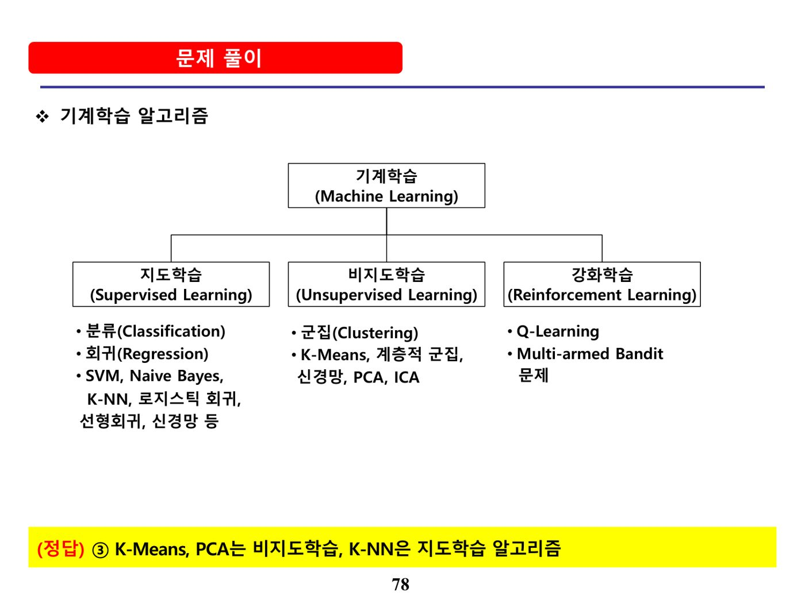
20. 딥러닝(Deep Learning) (원본 p.79-88)
가. 단일 퍼셉트론과 다층 신경망
단일 퍼셉트론은 사람의 생물학적 뉴런 기능을 모방하기 위해 고안된 구조로, 각 뉴런은 N차원 공간에서의 선형방정식을 표현하므로 하나의 단층 퍼셉트론은 여러 선형함수의 집합으로 간주된다. 단일 퍼셉트론으로 logical-OR·logical-AND 같은 이진 논리함수는 표현할 수 있으나, logical-XOR 함수는 표현할 수 없다는 한계가 있다.
| 구성요소 | 설명 |
|---|---|
| 입력층 | 신경망 외부로부터 입력을 받아들이는 층 — 뉴런이 아닌 입력값을 보관하는 buffer들로 구성 |
| 은닉층 | 외부에서 보이지 않고(hidden) 신경망 내부에서 값 전달 방식에 영향을 주는 역할 |
| 출력층 | 신경망 외부에 측정값을 출력 |
| 완전연결(Fully Connected) | 다층 퍼셉트론은 인접 층 사이의 노드 간에 모든 연결선이 존재한다고 가정 |
| feed-forward | 값의 전달이 한쪽 방향으로만 진행 |
활성화 함수로는 Linear(y=z), Sign, Sigmoid(y=1/(1+e−z)), Tanh(y=(ez−e−z)/(ez+e−z)), ReLU(y=max(0,z)), Leaky ReLU(y=max(αz,z)) 등이 사용된다.
나. CNN(Convolutional Neural Network)
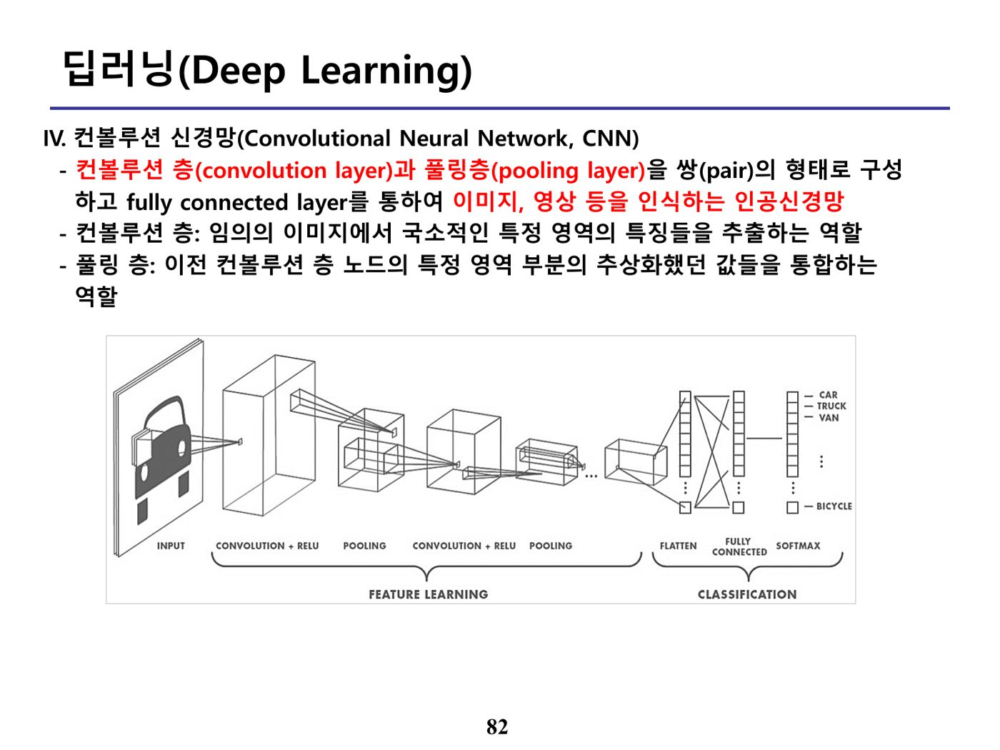
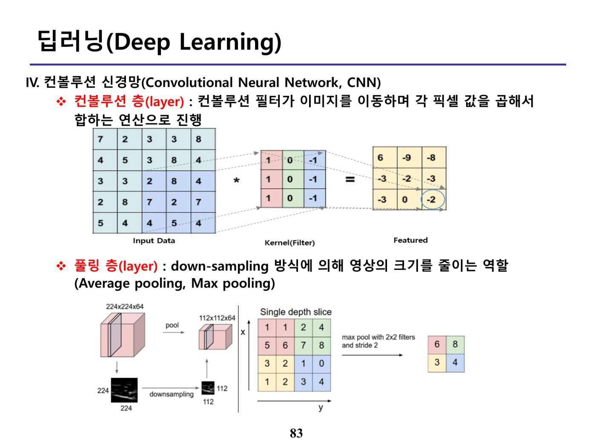
컨볼루션 층(convolution layer)과 풀링층(pooling layer)을 쌍(pair)으로 구성해 fully connected layer 이전에 이미지·영상 등을 압축하는 인공신경망이다. 컨볼루션 층은 입력 이미지에서 국소적인 특징 영역의 특징값들을 종합하는 역할을 하며, 풀링 층은 이전 컨볼루션 층 노드들의 특정 영역 부분적 주요값들을 통합하는 역할을 한다. 풀링 층은 다운샘플링(down-sampling) 방식으로 영상의 크기를 줄인다(Average pooling, Max pooling).
다. RNN(Recurrent Neural Network)과 LSTM
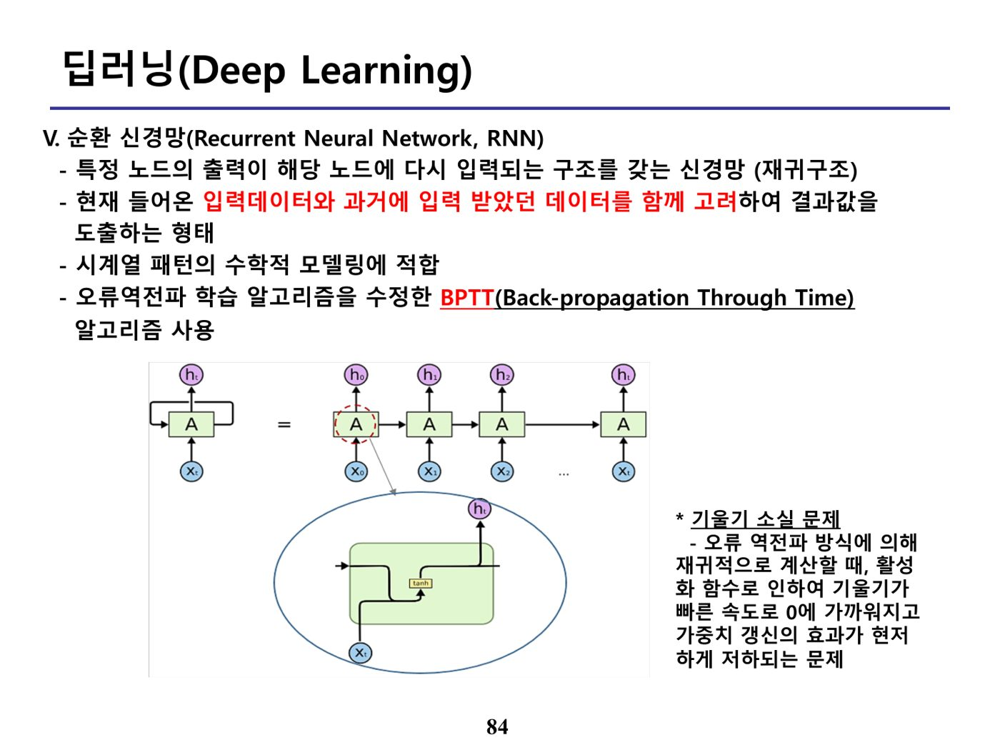
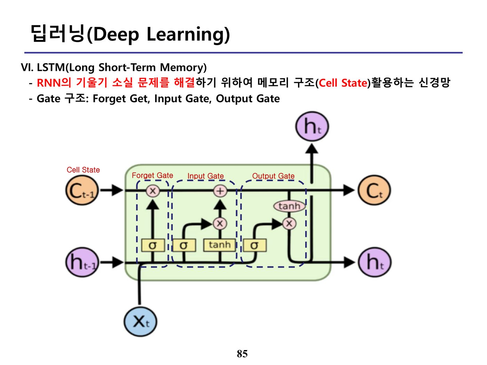
RNN(순환 신경망)은 특정 노드의 해당 노드에 다시 연결되는 구조를 갖는 신경망으로, 현재 입력과 과거 입력을 함께 고려해 결과를 도출하는 형태다. 시계열 데이터·순차적 학습 알고리즘에 적합하며, 오랜 역전파 학습 알고리즘을 수정한 BPTT(Back-propagation Through Time) 알고리즘을 사용한다. 다만 학습 과정이 길어질수록 기울기가 소실되는 문제가 있다.
LSTM(Long Short-Term Memory)은 RNN의 기울기 소실 문제를 해결하기 위해 메모리 구조(Cell State)를 활용하는 신경망이다. Forget Gate(어떤 정보를 버릴지 결정, Sigmoid 활용), Input Gate(어떤 새 정보를 저장할지 결정, Sigmoid·tanh 활용), Output Gate(최종적으로 어떤 정보를 출력할지 결정)의 3가지 게이트 구조를 가지며, Cell State는 입력값을 거의 그대로 유지하며 전체 체인에 계속 전달된다.
21. 5G (원본 p.89-99)
가. 5G 개념과 성능지표
5G는 초고속·초연결·초저지연 서비스를 목표로 4G 대비 10~1,000배의 성능향상이 기대되는 차세대 이동통신 기술이다.
| 3대 특성 | 설명 |
|---|---|
| 초고속(eMBB, enhanced Mobile Broadband) | UHD 기반 AR/VR 및 홀로그램 등 대용량 전송 |
| 초연결(mMTC, massive Machine-Type Communications) | 스마트시티, 사물인터넷 등 다양한 서비스 제공 |
| 초저지연(URLLC, Ultra Reliable&Low Latency Communications) | 자율주행차량, 실시간 interactive 게임 등 실시간 반응 속도가 필요한 서비스 |
| 성능지표 | 4G | 5G |
|---|---|---|
| 최대전송속도 | 1 Gbps | 20 Gbps |
| 이용자체감 전송속도 | 10 Mbps | 100~1,000 Mbps |
| 주파수 효율성 | - | 4G 대비 3배 |
| 고속 이동성 | 350 Km/h | 500 Km/h |
| 전송지연 | 10 ms | 1 ms |
| 최대기기 연결수 | 105개/km² | 106개/km² |
| 에너지 효율성 | - | 4G 대비 100배 |
| 면적당 데이터 처리용량 | 0.1 Mbps/m² | 10 Mbps/m² |
나. 5G 핵심 기술
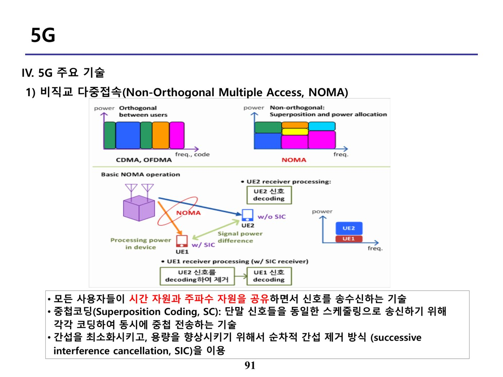
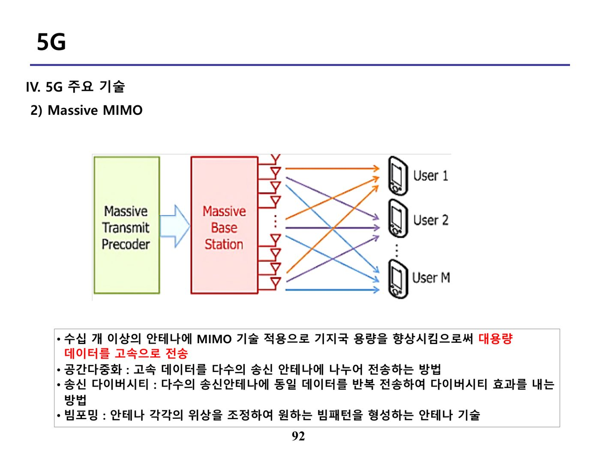
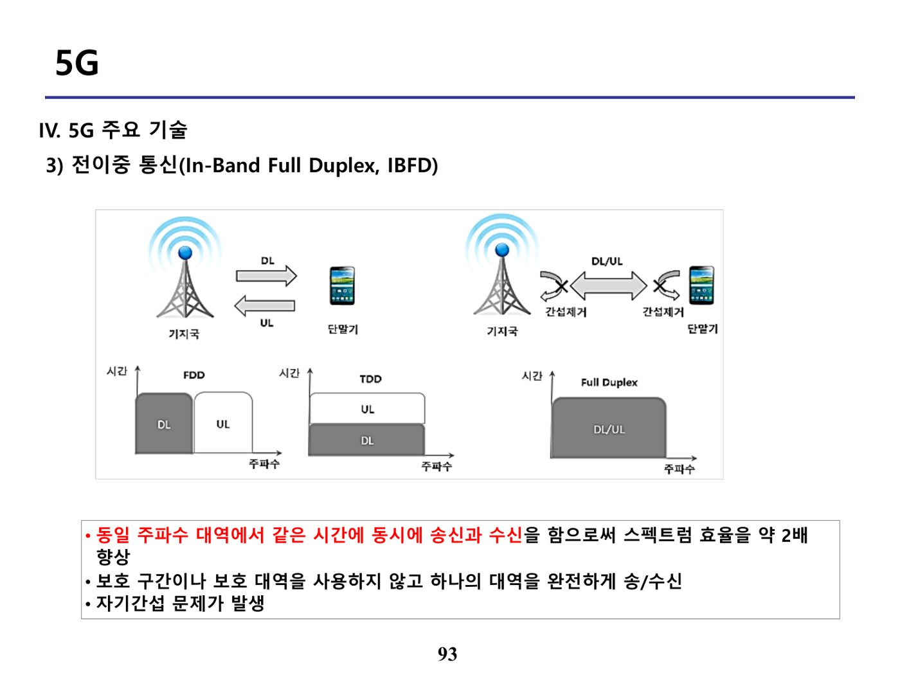
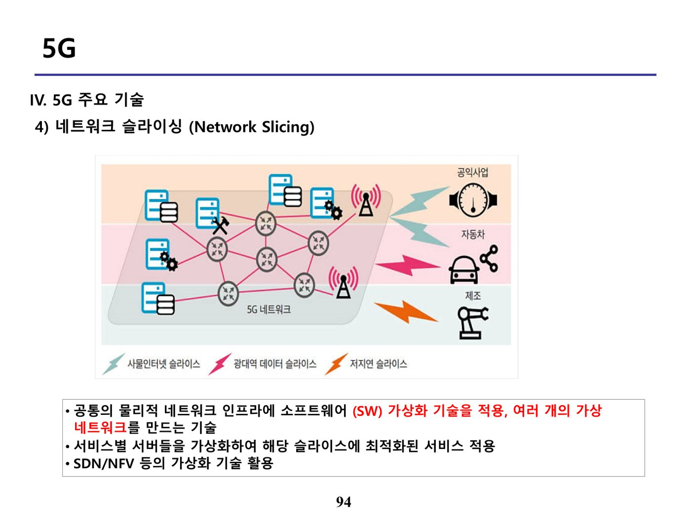
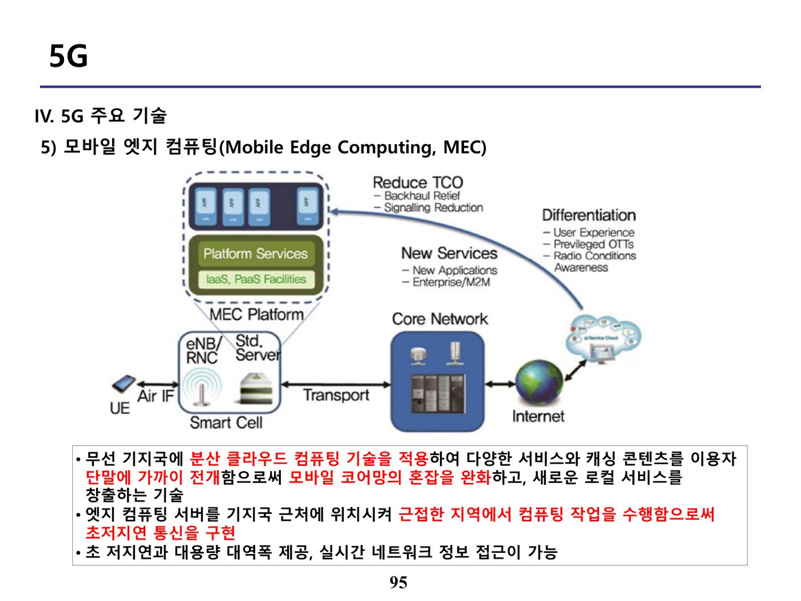
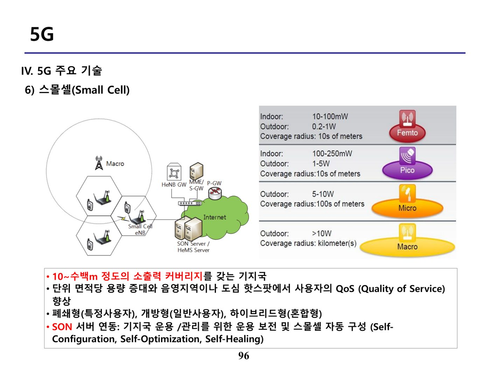
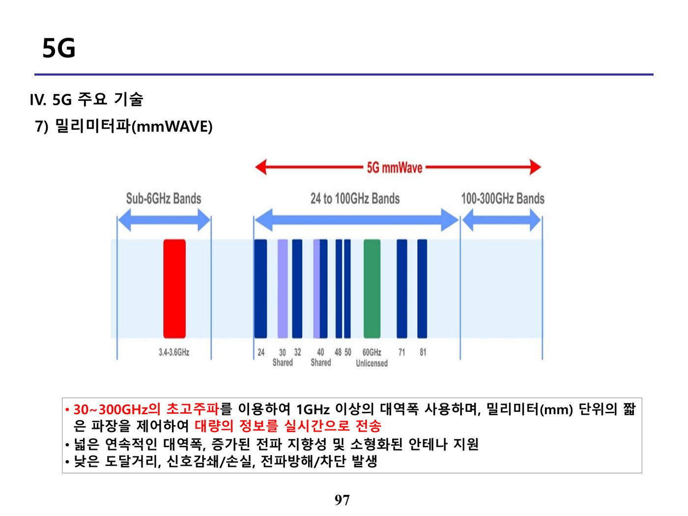
| 핵심 기술 | 요약 |
|---|---|
| 비직교 다중접속(NOMA) | 모든 사용자가 시간·주파수 자원을 공유하면서 신호를 동시 송수신, 중첩코딩(Superposition Coding)으로 단일 신호를 동일 스펙트럼으로 송신하며 각각 다른 전송 전력을 사용, SIC(Successive Interference Cancellation)로 간섭 최소화 |
| Massive MIMO | 수십 개 이상의 안테나·MIMO 기술 적용으로 지연·용량 향상, 공간 다이버시티(다수 안테나로 데이터 반복 전송해 오차 감소), 빔포밍(안테나 위상 조정으로 원하는 방향에 신호 집중) |
| 전이중 통신(IBFD) | 동일 주파수 대역에서 동시에 송수신함으로써 주파수 효율을 약 2배 향상 |
| 네트워크 슬라이싱 | 공통의 물리적 네트워크 인프라에 SW 가상화 기술을 적용해 다양한 네트워크 슬라이스를 유연하게 구성, SDN/NFV 등의 가상화 기술 적용 |
| 모바일 엣지 컴퓨팅(MEC) | 무선 기지국 근접 위치에 컴퓨팅 자원을 배치해 응답 속도를 개선하고, 실시간 네트워크 정보 접근이 가능 |
| 스몰셀(Small Cell) | 단위 면적당 용량 증대와 QoS 향상, 배터리 소모 감소와 편리한 유지보수를 위한 SON(Self-Configuration·Self-Optimization·Self-Healing) 기술 적용 |
| 밀리미터파(mmWave) | Sub-6GHz 이상의 24~100GHz대 주파수를 활용해 초광대역을 확보하지만 도달거리가 짧다는 한계 |
22. 컨테이너 가상화/도커 (원본 p.100-107)
가. 컨테이너(Container) 개념
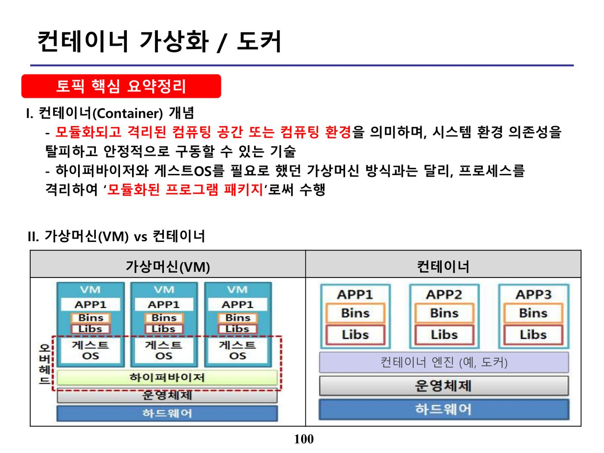
| 구분 | 가상머신 | 컨테이너 |
|---|---|---|
| 이식성 | VM당 모놀리딕(Monolithic)한 서비스, VM 단위의 이동·복제·생성 | 실행에 필요한 모든 종속성·구성을 함께 배포(실행환경의 일관성), 마이크로서비스(MSA) 구축에 최적 |
| 효율성 | 1VM당 1서비스, 성능 오버헤드 존재 | 호스트 OS 커널 공유로 필요한 만큼 자원 사용 |
| 서비스 신속성 | 최소 수 GB 이상의 추가 VM 생성 | 게스트 OS 없는 수 MB 단위의 컨테이너 생성 |
| 라이선스 | VM 개수만큼 지불 | Host 1대의 비용만 지불 |
| 안정성 | 각각 독립된 VM으로 안정적 운영(완전한 분리) | OS 커널을 공유하므로 장애 발생 시 함께 영향 |
| 가상화 레벨 | HW 레벨 가상화(게스트 OS+하이퍼바이저) | 운영체제 수준 가상화(OS 레벨), OS 제외한 앱 실행 필요 파일만 패키징 |
나. 가상화 기술 유형과 도커
| 구분 | 설명 |
|---|---|
| 전가상화 | 컴퓨팅 시스템의 HW 자원 전체를 가상화. 게스트 OS 수정 없이 도입 쉽지만 반가상화 대비 오버헤드 큼 |
| 반가상화 | HW 자원 전체가 아닌 필요한 기능만 가상화. 게스트 OS 수정 필요, 하이퍼바이저 개입 최소화로 성능 향상 |
| Hypervisor | 호스트 컴퓨터에서 다수의 서로 다른 OS를 동시 실행하는 논리적 플랫폼. Type-1(서버 가상화용, HW에서 직접 실행)과 Type-2(개인 PC용, 호스트 OS에서 실행)로 구분 |
| 컨테이너 | 가상화된 운영체제에 애플리케이션을 올려 운영(프로세스 격리), 경량화·이식성이 뛰어남. Cgroup(자원 할당·제어), Namespaces(독립된 격리 환경 제공) |
| 도커(Docker) | 컨테이너 기반 오픈소스 가상화 플랫폼. Registry(이미지 저장), Daemon(컨테이너 관리), Image(실행가능 프로그램·소스가 설치된 파일), Container(Image 실행상태)로 구성 |
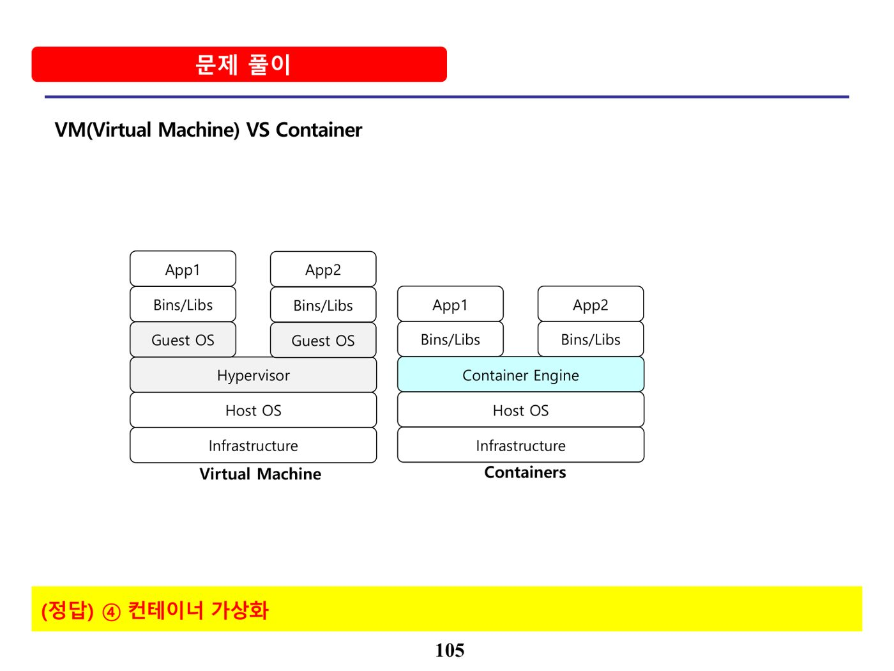
도커(Docker)는 컨테이너 기반의 가상화 기술을 제공하는 오픈소스 프로젝트이자 컨테이너 관리 플랫폼으로, 기존 리눅스 컨테이너(LXC) 기술에 이식성 향상, 데이터와 코드의 분산된 관리, 프로그램 스택의 간결명료함 등을 더해 이동성과 유연성을 향상시켰다.
컨테이너 기반 가상화는 전통적인 하이퍼바이저와 달리 운영체제 수준에서 가상화를 제공하며 특정 응용을 위한 독립된 공간을 제공한다. GuestOS를 설치하지 않고 필요한 라이브러리와 응용만 설치하면 되므로 패키징과 마이그레이션 적용이 쉽다. 또한 컨테이너는 실행에 필요한 모든 종속성 및 구성을 함께 배포하는 특성 덕분에 마이크로서비스(MSA, 애플리케이션을 상호 독립적인 최소 구성요소로 분할해 구축하는 아키텍처) 활용에 오히려 이상적인 배포 유닛이자 독립 실행 환경을 제공한다.
23. 빅데이터 분석 프로세스 (원본 p.108-112)
| 단계 | 내용 | 주요기술 |
|---|---|---|
| 빅데이터 수집 | 조직 내·외부의 분산된 데이터 소스로부터 필요 데이터를 검색해 수동·자동으로 수집. 단순 확보가 아닌 검색/수집/변환을 통한 정제 데이터 확보 | ETL/크롤링 엔진/로그 수집기/센싱, RSS 및 Open API, 스쿱·플럼·척와·카프카 |
| 빅데이터 저장 | 수집 데이터를 분석에 적합하게 안전·영구적으로 보관. 전처리(필터링·유형변환·정제), 후처리(평활화·집계·일반화·정규화) | 병렬 DBMS, 하둡(Hadoop), NoSQL |
| 빅데이터 처리 | 유용한 정보·숨은 지식을 찾기 위한 가공·분석 지원. 의사결정의 즉시성이 덜 요구되며 장기적·전략적 분석 위주. 통상 분산 처리 기술 필요, 실시간 처리가 보장돼야 하는 분석에는 부적합 | 실시간 처리, 분산 병렬처리, 인-메모리, 인-데이터베이스 처리 |
| 빅데이터 분석 | 대량 데이터로부터 숨겨진 패턴과 알려지지 않은 정보 간의 관계를 찾는 과정 | 데이터 마이닝, 텍스트 마이닝, 평판분석, SNA |
| 빅데이터 시각화 | 분석 결과를 시각적 수단으로 쉽게 전달, 데이터 값을 단순화해 그림·그래프로 제공 | 편집기술, 정보 시각화 기술, 시각화 도구 |
카프카(Kafka)는 LinkedIn에서 개발한 Pub-Sub 모델 기반의 분산 메시징 시스템으로, 대용량 실시간 로그처리 및 분산 환경에 특화된 오픈소스 시스템이다. Broker(카프카 서버, 1대 이상의 클러스터), Topic(메시지 집합), Partition(로드밸런싱을 위한 토픽 분할), Replication(Fault Tolerance를 위한 파티션 복제)으로 구성되며, Producer API(스트림 레코드 게시), Consumer API(스트림 레코드 구독), Stream API(토픽 스트림 변환), Connector API(재사용 가능한 Producer·Consumer 연결) 등을 제공한다.
| 구분 | Flume | Scribe | Chukwa |
|---|---|---|---|
| 주체 | 아파치 | 페이스북 | 아파치 |
| 수집 방법 | 다양한 소스로부터 데이터를 수집해 다양한 방식으로 전송, 단순·유연한 확장 가능 모델 제공 | 클라이언트-서버 타입에 상관없이 다양한 방식으로 로그 수집 | 수집된 로그 파일을 HDFS에 저장 |
| 특징 | 대용량 로그 데이터를 안정성·가용성 바탕으로 효율적으로 수집 | 수많은 서버로부터 실시간 스트리밍 로그 수집(Apache Thrift 기반) | 하둡 서브 프로젝트로 분산서버 로그를 수집·저장·분석 |
24. VR(Virtual Reality)/AR(Augmented Reality) (원본 p.113-117)
| 구분 | 설명 |
|---|---|
| VR(Virtual Reality) | 컴퓨터가 만든 가상환경 내에서 사용자의 감각 정보를 확장·공유해 현실에서 경험하기 어려운 상황을 체험. 몰입형 장치로 현실과 단절된 콘텐츠를 체험 |
| AR(Augmented Reality) | 현실 세계·실제 사물에 가상의 콘텐츠를 합성해 소통환경·정보를 제공. 실제 세계와 융합된 콘텐츠를 제시 |
| 구분 | 기술 | 설명 |
|---|---|---|
| 가상현실(VR) | 몰입 가시화 | 가상현실 몰입환경 제공. HMD·프로젝션 등 가시화 장치, 영상가시화 SW 기술 |
| 실감 상호작용 | 오감 기반 참여자-시스템 입출력 기술. 모션기반 시뮬레이터, 위치추적, 촉각·햅틱·후각·미각 기술 | |
| 환경생성 및 시뮬레이션 | 360도 파노라마 이미지 등으로 가상현실 환경 생성, 시나리오 기반 몰입 가시화·상호작용 환경 제공 | |
| 증강현실(AR) | 센싱 및 트래킹 | 가상 물체를 실제 공간에 정밀하게 위치. 마커 기반 방법과 비주얼 트래킹 등 다양한 방법 |
| 영상합성 | 가상 물체를 실제 공간 영상과 일치하게 표현, 심리스(seamless) 합성 | |
| 실시간 상호작용 | 합성된 가상 물체를 참여자가 실시간 상호작용으로 체험(대표 예: 포켓몬고) |
| 구분 | MQTT | XMPP | CoAP |
|---|---|---|---|
| 개념 | 제한된 환경·모바일에 최적화된 Publish-Subscribe 방식의 경량 메시지 프로토콜 | Publish/Subscribe 구조 기반의 확장성 있는 XML 기반 실시간 메시지 교환 프로토콜 | 제한된 환경에 최적화된 REST 기반의 경량 프로토콜 |
| 특징 | Broker 기반 N:M 통신 | XML 기반 메시지 처리, 강력한 보안, 다수 메신저 적용 | HTTP 기반, RESTful, 저전력, 비동기 전송 |
| 보안 | TLS(SSL) 기반 | TLS(SSL) 기반 | DTLS(Datagram TLS) 기반 경량화 보안 |
| 표준 | OASIS | IETF | IETF |
25. LPWA(Low Power Wide Area) (원본 p.118-120)
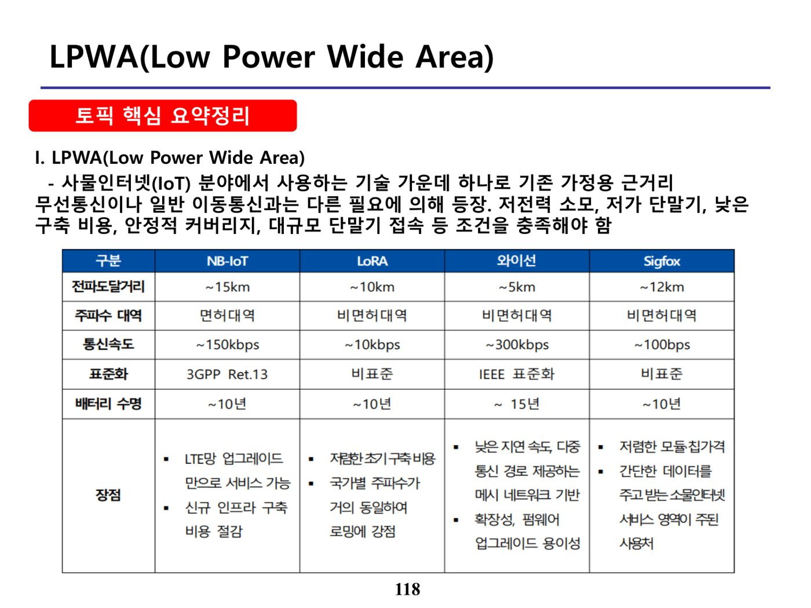
LPWA(저전력 광역 통신)는 사물인터넷 분야에서 사용하는 기술 중 하나로, 하나의 기지국이 넓은 지역을 커버하며 저전력·저가·장거리 통신을 지원한다.
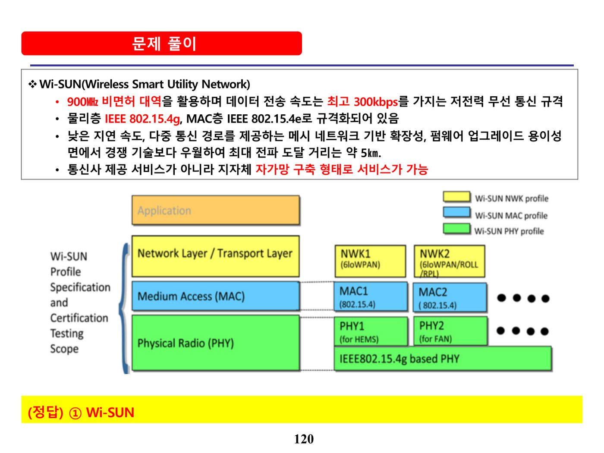
Wi-SUN(Wireless Smart Utility Network)은 900MHz 비면허 대역을 활용하며 데이터 전송속도는 최고 300kbps를 가지는 저전력 무선통신 규격으로, 물리층은 IEEE 802.15.4g, MAC층은 IEEE 802.15.4e로 규격화되어 있다. 낮은 지연속도와 다중 통신경로를 제공하는 메시 네트워크 기반의 확장성, 펌웨어 업그레이드 용이성 면에서 경쟁 기술보다 우월하며 최대 전파 도달거리는 약 5km다. 통신사 제공 서비스가 아닌 지자체 자가망 구축 형태로 서비스가 가능하다.
📚 전체 기출·예상문제 (20문항) — 원문 수록
본 강좌 원본 PDF에 수록된 기출·예상문제를 빠짐없이 원문 그대로 정리했습니다(원문의 띄어쓰기 누락은 가독성을 위해 보완했습니다). 정답·해설은 강의 원문 기준입니다.